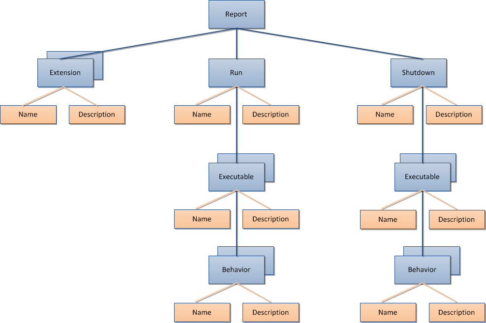

The reporting mechanism allows creating a full report of the bootstrapping process. To be able to report the bootstrapping process the process must actually run and a reporter must be present. By default the bootstrapper uses a null reporter which does nothing with the report. But it is also possible to hook in a report generator which creates Visio, Enterprise Architect or ... (you name it!) diagrams.
A custom reporter must implement the reporter interface IReporter. The reporter receives an IReportingContext which contains all necessary information about the bootstrapping process. The custom reporter must be passed upon the construction of the DefaultBootstrapper
The reporting context is structured like the following:
